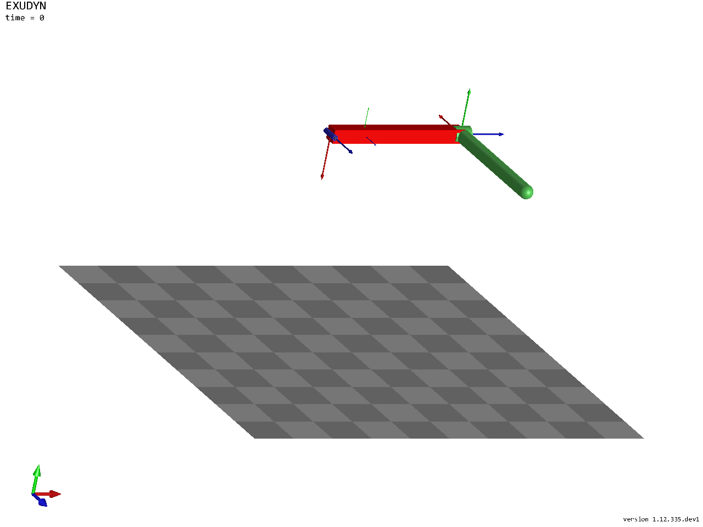
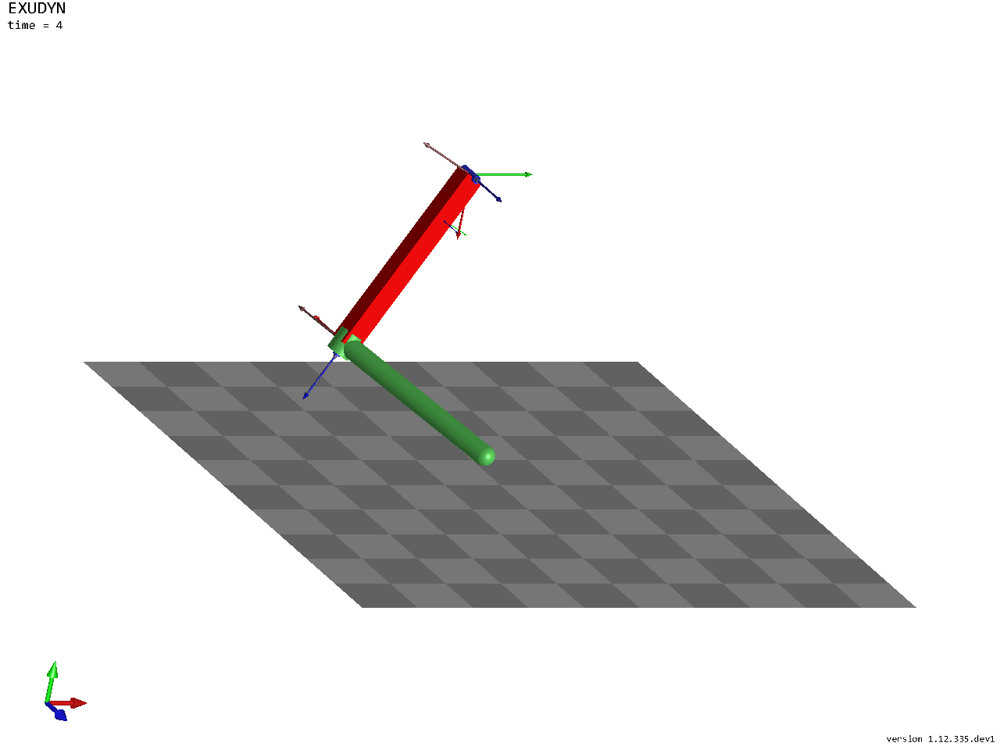
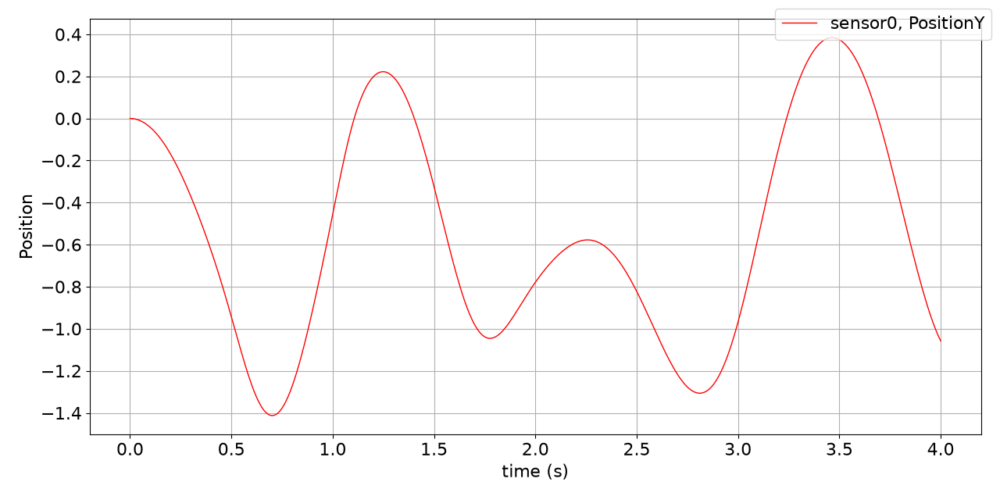

Rigid bodies and joints with Create functions
Notebook python/Notebooks/tutorialRigidBodyCreate.ipynb - the same model built from nodes, objects and markers is
python/Notebooks/tutorialRigidBody.ipynb.
This tutorial sets up a multibody system of a ground, two rigid bodies and two revolute joints, driven by gravity:
a double pendulum in 3D. The mbs.Create... functions add a body or a joint with everything it needs in one call;
the outputs below each cell are those of the last run.
We import the Exudyn library, the inertia class of a cuboid and the sensor class; exudyn.graphics makes the
graphics of the bodies. Many examples use the star import from exudyn.utilities import * instead, which is handy
for rapid model development.
import exudyn as exu
from exudyn.utilities import InertiaCuboid, SensorBody, RotationMatrixX, RotationMatrixY
from exudyn.interactive import ShowImage
import exudyn.graphics as graphics
import numpy as np
SC = exu.SystemContainer()
mbs = SC.AddSystem()
Some geometrical parameters, and a ground body - a checkerboard below the pendulum, for the images. The ground is at \([0,0,0]\); there could be several ground objects.
g = [0,-9.81,0] #gravity
L = 1 #length
w = 0.1 #width
bodyDim = [L,w,w] #body dimensions
pMid0 = np.array([L*0.5,0,0]) #center of body0
oGround = mbs.CreateGround(referencePosition=[0,0,0],
graphicsDataList=[graphics.CheckerBoard(point=[0.5,-1.6,0], normal=[0,1,0], size=3)])
For the physical parameters of a rigid body we use the class RigidBodyInertia: mass, center of mass (COM) and
inertia, which can be shifted or added; derived classes give the inertias of cylinders, cuboids, etc. The center of
mass of the first link is moved axially - it would be at the body’s local position \([0,0,0]\) otherwise.
For visualization, the body is a brick, and a basis (three RGB vectors) is drawn at its center of mass.
mbs.CreateRigidBody adds the node, the body and the gravity load at once; it could also set initial velocities, and
nodeType selects the rotation parameters of the node, see the node types:
RotationEulerParameters (fast, one additional algebraic equation, needs an implicit solver), RotationRxyz
(singular if the second angle reaches \(\pm 90°\), no algebraic equation) or RotationRotationVector (for Lie group
integrators, also explicit; the fewest unknowns). The reference frame of the body could also be given at once as
referenceHT, a homogeneous transformation exu.HT.
iCube0 = InertiaCuboid(density=5000, sideLengths=bodyDim)
iCube0 = iCube0.Translated([-0.25*L,0,0]) #transform COM, COM not at reference point!
graphicsBody0 = graphics.Brick(centerPoint=[0,0,0], size=[L,w,w], color=graphics.color.red)
graphicsCOM0 = graphics.Basis(origin=iCube0.com, length=2*w)
b0 = mbs.CreateRigidBody(inertia = iCube0, #includes COM
referencePosition = pMid0,
gravity = g,
graphicsDataList = [graphicsCOM0, graphicsBody0])
A revolute joint about the global \(z\)-axis attaches the first body to the ground. CreateRevoluteJoint attaches a
revolute joint immediately to rigid bodies, with the position and axis given once, in global coordinates (by
default) of the reference configuration; it computes the markers and their frames. The same joint built from markers
and a generic joint is in the other rigid body tutorial.
oJoint0 = mbs.CreateRevoluteJoint(itemNumbers=[oGround, b0], position=[0,0,0],
axis=[0,0,1], axisRadius=0.2*w, axisLength=1.4*w)
The second link hangs at the end of the first and points along \(z\); its graphics is a RigidLink, and its joint
turns about the global \(x\)-axis:
graphicsBody1 = graphics.RigidLink(p0=[0,0,-0.5*L], p1=[0,0,0.5*L],
axis0=[1,0,0], axis1=[0,0,0], radius=[0.06,0.05],
thickness=0.1, width=[0.12,0.12], color=graphics.color.lightgreen)
b1 = mbs.CreateRigidBody(inertia = InertiaCuboid(density=5000, sideLengths=[0.1,0.1,1]),
referencePosition = np.array([L,0,0.5*L]),
gravity = g,
graphicsDataList = [graphicsBody1])
oJoint1 = mbs.CreateRevoluteJoint(itemNumbers=[b0, b1], position=[L,0,0],
axis=[1,0,0], axisRadius=0.2*w, axisLength=1.4*w)
Optionally, forces and torques on bodies - with bodyFixed=True, the direction would rotate with the body - and a
sensor for the position of the tip of the second link:
force = [0,0.5,0] #0.5N in y-direction
torque = [0.1,0,0] #0.1Nm around x-axis
lForce = mbs.CreateForce(itemNumber=b1, loadVector=force, localPosition=[0,0,0.5], bodyFixed=False)
lTorque = mbs.CreateTorque(itemNumber=b1, loadVector=torque, bodyFixed=False)
sens1 = mbs.AddSensor(SensorBody(bodyNumber=b1, localPosition=[0,0,0.5*L], storeInternal=True,
outputVariableType=exu.OutputVariableType.Position))
Before the simulation, Assemble() links objects, nodes, markers, …, assigns the initial values and checks the
system. Then the system can be inspected - print(mbs) gives an overview, mbs.systemData.Info() every item as
dictionary.
mbs.Assemble()
print(mbs)
<systemData:
Number of nodes= 2
Number of objects = 5
Number of markers = 8
Number of loads = 4
Number of sensors = 1
Number of ODE2 coordinates = 14
Number of ODE1 coordinates = 0
Number of AE coordinates = 12
Number of data coordinates = 0
For details see mbs.systemData, mbs.sys and mbs.variables
>
There are 2 nodes for the two rigid bodies; the five objects are the ground, the 2 bodies and the 2 joints.
The degree of freedom of a constrained system is not always obvious, and constraints added by mistake may be
redundant, which a solver cannot handle. ComputeSystemDegreeOfFreedom shows both: the 14 coordinates of the two
Euler parameter nodes, \(2\times 5\) joint constraints and 2 Euler parameter constraints give a degree of freedom of 2.
Two identical joints would show 5 redundant constraints.
dof = mbs.ComputeSystemDegreeOfFreedom(verbose=True)
ODE2 coordinates = 14
total constraints = 12
redundant constraints = 0
pure algebraic constraints= 0
degree of freedom = 2
DrawSystemGraph shows the structure of the model - which nodes, objects, markers, loads and sensors there are and
how they are connected. CreateRigidBody added an ObjectRigidBody, a NodeRigidBodyEP, a LoadMassProportional
for gravity with a MarkerBodyMass; CreateRevoluteJoint two MarkerBodyRigid and an ObjectJointRevoluteZ. It
needs the package networkx.
try:
mbs.DrawSystemGraph(useItemTypes=True)
except ImportError:
print('DrawSystemGraph needs networkx: pip install networkx')
DrawSystemGraph needs networkx: pip install networkx
The model in its reference configuration, without the nodes and the gravity loads, from a view turned so that the
three axes can be seen. In a script, SC.renderer.Start() opens the render window instead; there, many options of
the visualization settings help, see the visualization settings.
SC.visualizationSettings.nodes.show = False
SC.visualizationSettings.loads.show = False
SC.visualizationSettings.connectors.showJointAxes = True
SC.visualizationSettings.general.showSolverInformation = False
view = RotationMatrixX(-0.4) @ RotationMatrixY(-0.5)
image = ShowImage(SC, size=[1280,960], modelRotation=view)


The solver settings: implicit solvers have no automatic step size, so the end time and the step size are set. The
solution is stored every 5 ms for the SolutionViewer; timeIntegration.realtime.active = True would let a
simulation in a render window run in real time.
The index 2 (velocity level) trapezoidal rule is energy conserving (guaranteed for linear systems, very often also for nonlinear multibody systems), but leads to a small drift of the position constraints, linear in time. The default generalized-\(\alpha\) method (index 3) damps numerically, with its spectral radius, which stabilizes the constraints; for fixed step sizes, it is the recommended integrator.
tEnd = 4 #simulation time
h = 1e-3 #step size
simulationSettings = exu.SimulationSettings()
simulationSettings.timeIntegration.numberOfSteps = int(tEnd/h)
simulationSettings.timeIntegration.endTime = tEnd
simulationSettings.solution.file.writePeriod = 0.005 #store every 5 ms
mbs.SolveDynamic(simulationSettings = simulationSettings,
solverType = exu.DynamicSolverType.TrapezoidalIndex2)
image = ShowImage(SC, size=[1280,960], modelRotation=view) #the state at the end


The vertical position of the tip over time - PlotSensor has many options to show results:
mbs.PlotSensor(sensorNumbers=[sens1], components=[1], closeAll=True)


The frame of the second body at the end, as homogeneous transformation exu.HT:
H = mbs.GetObjectOutputBody(b1, exu.OutputVariableType.HomogeneousTransformation, localPosition=[0,0,0])
print('position of body 1:', np.round(H.translation, 4))
print('rotation angle of body 1 (rad):', round(H.RotationAngle(), 4))
position of body 1: [-0.329 -0.9634 0.4621]
rotation angle of body 1 (rad): 2.1108
In a script, mbs.SolutionViewer() shows the stored motion forward and backward in the render window.
Congratulations, you can model multibody systems now. Much more is possible, including feedback control and
flexible bodies, see the examples.